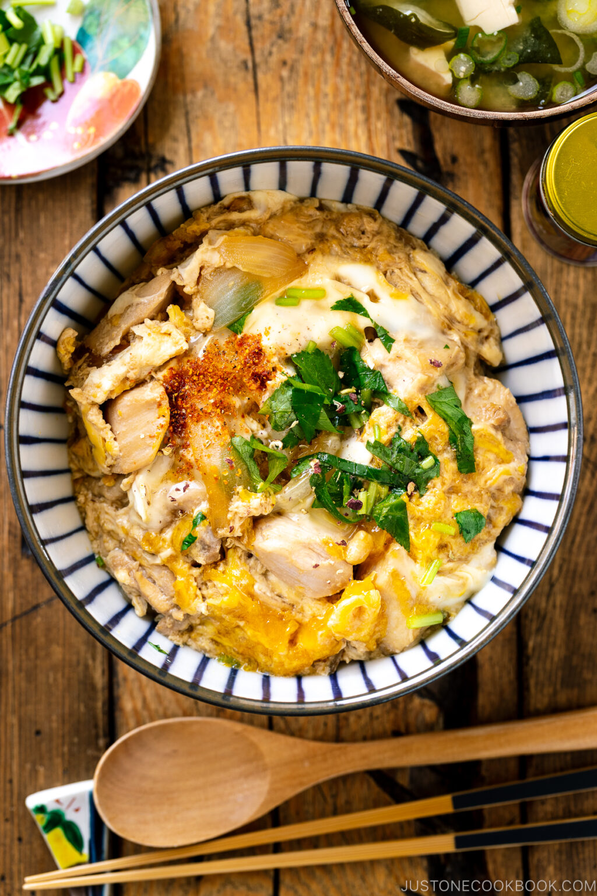

Oyakodon

Original source: "Just One Cookbook"
Description
Oyakodon is a Japanese rice bowl dish made with chicken, egg, and various seasonings. It's a staple dish in our household because it is simple, quick, and delicious. The recipe below makes enough for two people, with some leftovers.
Ingredients
- 2 boneless skinless chicken thighs
- 1/2 onion
- 2 large eggs
Seasonings:
- 2/3 cup dashi
- 1 1/2 tbsp mirin
- 1 1/2 tbsp sake
- 1 1/2 tbsp soy sauce
- 1 1/2 tsp sugar
To serve:
- 3 cup cooked Japanese short grain rice
- small bunch mitsuba (Japanese parsely), or green onion/scallion
- shichimi togarashi (Japanese seven spice)
Steps
- Combine dashi, mirin, sake, soy sauce in a bowl or a liquid measuring cup.
- Add sugar and mix all together until sugar is dissolved.
- Thinly slice the onion and chop mitsuba (or green onion). Beat one egg in a small bowl (you will need to beat another egg when you work on the second batch).
- Slice the chicken thigh diagonally and cut into 1.5" (4 cm) pieces. I recommend using “sogigiri” cutting technique so the chicken will be equal thickness and create more surface area for fast cooking.
- We make one serving at a time using an 8-inch frying pan (so you can slide the dish onto rice bowl). Divide all the ingredients in half. Add half of the onion in a single layer. Pour roughly 1/3 to ½ of the seasoning mixture (depending on the size of your frying pan, the amount may vary). You will need just enough sauce to cover the onion and chicken.
- Add half of the chicken on top of the onion. Make sure the onion and chicken are evenly distributed. Turn on the heat to medium heat and bring to a boil.
- Once boiling, lower the heat to medium-low heat. Skim off any foam or scum if you see any. Cover and cook for about 5 minutes or until chicken is no longer pink.
- Slowly and evenly drizzle the beaten egg over the chicken and onion. Cook covered on medium-low heat until the egg is done to your liking. Usually, Oyakodon in Japan is served with an almost set but runny egg.
- Add the mitsuba (or green onion) right before removing from the heat. Pour the chicken and egg on top of steamed rice and drizzle desired amount of remaining sauce.
Return to main page